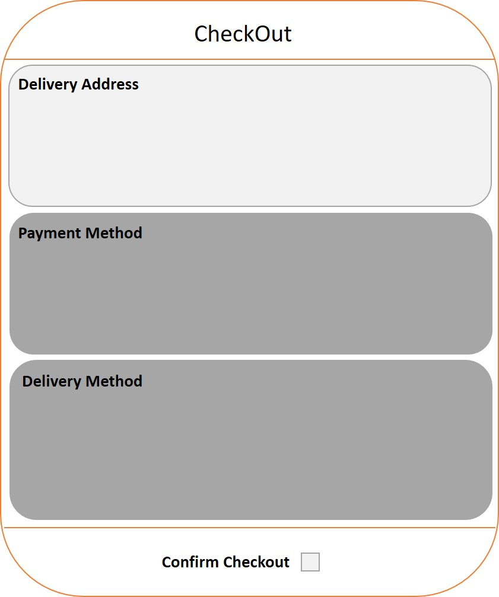
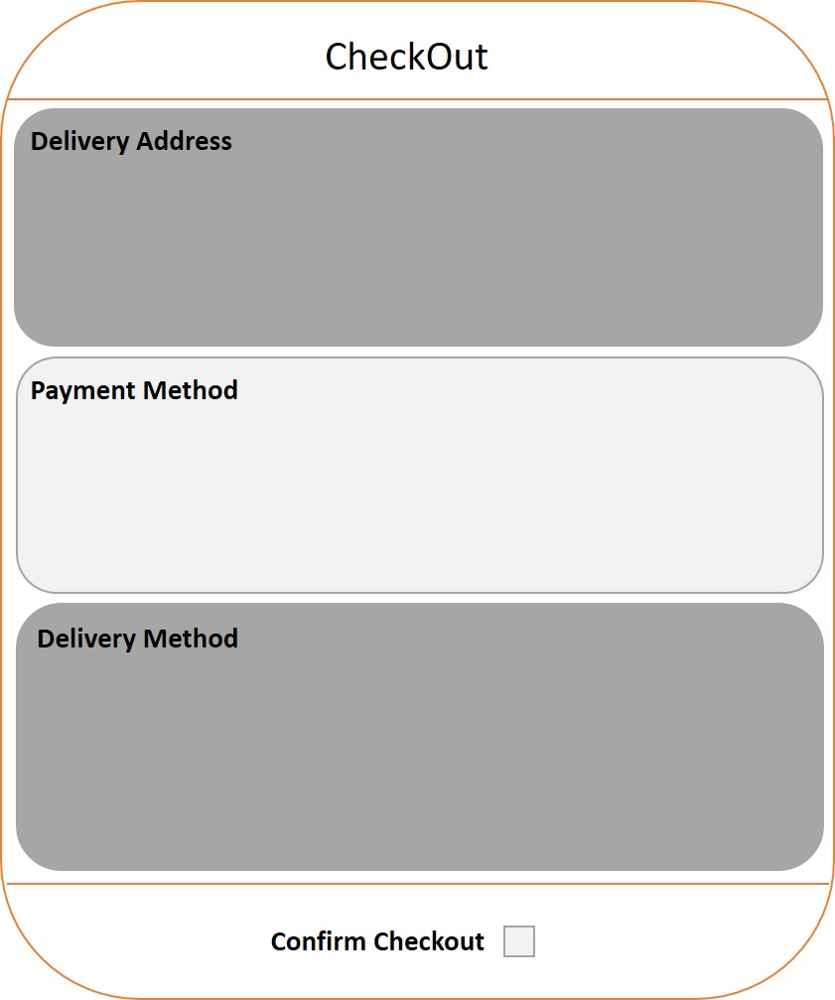
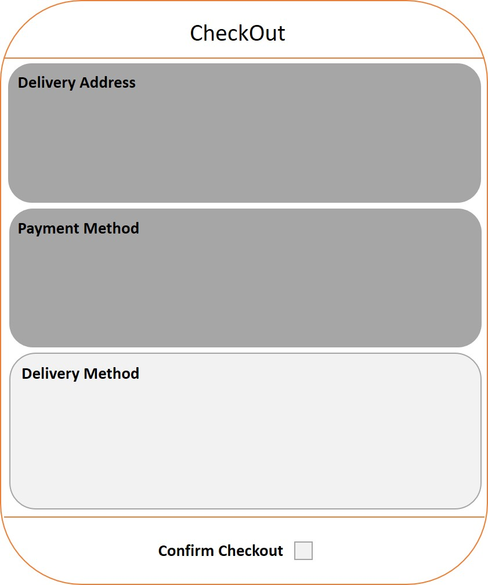

Product Imporvement
This question are a great way to show off creative insights and demonstrate an understanding of a products features, users and market. The structure of the analysis follows a similar approach to the product design post. Specific to product improvement, it is important to have a quantitative metric that can be used to measure a change.
Procedure:
- Describe the product – This will help you to organise your thoughts on the product and clarify any initial ambiguity between yourself and the questioner.
- What is the product/service?
- Who are the users?
- What market does the product operate in?
- Clarify the scope – Given that we need to improve a product, it is important to understand what ‘improvement’ the questioner wants to see and to what specific feature of the product. For example, in the general case of ‘How would you improve company X’?
- Company X is composed of several different subsidiaries e.g. Food, Travel, Business? Is there a specific part of X that you would like me to improve?
- Is there a part of X Travel that you would like me to focus on e.g. the landing page of the website, the booking procedure, the follow-up notifications to customers?
- Is there a specific problem with the booking procedure that you would like me to change?
- Choose a metric – After clarifying the improvement to be made, you can now focus on a metric (or metrics) that you want to improve for the product. Clarify your reasoning behind choosing a particular metric. Some examples are listed below:
- Customer Base - Is the number too small? Is the number changing quickly/slowly? Are users having a problem with a specific process within the product?
- Revenue - Does the business need to increase the number of paid users? Or, does it need to increase the spending per paid user?
- Conversion - Does the business need to convert more visitors into paid users? Reduce the trial service length
- Retention - Are customers churning after a single/multiple use(s) of the product?
- User Engagement - Are customers not spending enough time with the product? Is the community/feedback system poor?
- User groups and use cases – Similar to the product design question, we want to identify various user groups of the product and determine what their use cases are and vice versa. After identifying these, focus on one user group to improve the product for.
- Determine and prioritise problems – Having selected the user group, think of pain points that are common to this group. Think about the process that this group goes through when they the product or a feature within it, from start to finish.
- List your solutions– Brainstorm solutions to the problems that you have identified above. This is a great opportunity to be creative and tests your ability to identify practical solutions thereby shwoing an understanding of the product/market fit.
- Tracking metrics – Determine how you might be able to measure changes from metrics identified in step (3) based on a solution (or solutions) implemented in step (6). Prioritise the solutions that benefit the greatest number of use cases.
- Summarise – Recap on the product, what you are trying to improve, the metric that you are improving, the user group you are focusing on, the main problems they face, the solutions you have identified and how you will measure changes to the metrics.
Example:
How would you improve Amazon?
- Describe the product.
- A: Amazon is one of the largest e-commerce companies in the world with a number of different subsidiaries in cloud computing, robotics, audiobooks, groceries and home entertainment. Amazon’s business operates in the commercial and consumer space with e.g AWS (Amazon Web Services) focused on businesses and Amazon.com on consumers.
- Clarify the scope.
- A: Amazon is composed of many different subsidiaries e.g. e-commerce, AWS, Fresh, Audible, Air. Is there a specific part of Amazon that you would like me to improve?
- B: Could you please focus on the e-commerce side of the business.
- A: Is there a part of Amazon e-commerce that you would like me to improve e.g. landing page, review system, checkout procedure?
- B: Let’s narrow in on the checkout procedure.
- A: Is there a specific problem with the checkout procedure that you would like me to change?
- B: Nothing specific, use your own judgement.
- Choose a metric
- A: I am going to address this problem by looking at ways of improving ‘user engagement’ and the ‘conversion rate’ of potential customers to paying customers. I have decided to focus on these areas because these metrics are related to the base of the problem: the checkout procedure.
- User groups and use cases.
- A: There are several different user groups that visit Amazon.com for shopping. These can be broadly separated into the following categories:
- Frequent Buyers - These users probably have an Amazon Prime subscription and use Amazon for most of their shopping needs. They may place orders in the range of 50+ items per year and look to Amazon as their first destination for finding a product.
- Casual Buyers - These users frequent Amazon from 10 to 50 times a year. They use Amazon for most of their product purchases but shop elsewhere online and offline to fill additional voids.
- Occasional Buyers - These users visit Amazon a couple of times (2 to 10) a year for buying gifts. They might visit for Christmas/Birthday items, products they can't find in retail stores. Amazon isn’t their first destination for buying products and they primarily shop within brick and mortar stores. This group might be more interested in deals that Amazon promotes during seasonal holidays and special events e.g. Prime Day.
- I am going to focus on the casual buyer’s group. The frequent buyers use Amazon heavily already and the checkout process is not likely to be a significant factor that deters them from ordering more products. For casual buyers, I believe that the checkout process is not the ultimate factor that hinders this group from using Amazon more frequently. The occasional buyer’s are most likely group out of the three to be impeded, annoyed or reluctant to use the online checkout system.
- Determine and prioritise problems.
- A: I am now going to list a number of problems that this use group might have with the online checkout system:
- Confusion during checkout - Currently the process for checking out requires five steps: confirmation of items selected, address to be dispatched to, delivery method (priority post etc), payment method, final confirmation.
- Security of system - New users might be intimidated by the checkout system when it requires them to enter financial information e.g. bank card details.
- Retractability of process - During the checkout process, when the user steps into a new page there is not an option to go back to the previous step. The process has to be started again which could cause frustration or confusion.
- List your solutions.
- A: Based upon the problems above, here is a list of solutions that might benefit the user group when using the checkout system:
- Reduce the number of steps - There are additional dialogue screens during checkout e.g. promoting Prime services, which extends the process to seven or eight steps in total. This information could integrated at later date when the user is more comfortable with the checkout procedure. If a new user is already incentivised to buy a product on Amazon, they could be overloaded and detered by this flood of information.
- Previous step option - There is no option to return to a previous page to correct information. This is intended to rush users throught the checkout but may be frustrating for new/occasional users of Amazon who are unfamiliar with how to edit past steps. Although the information is summarised on the final page, there is now easy way to change it at this step.
- Single page checkout - A single page for checking out could give confidence to a new user that all the information they have entered is correct (product, address and payment method). Essentially, the single page summary acts as the checkout screen.
- Best Price Guarantee - A comparison box that compares the price of a product the user is buying on Amazon Vs. an e-commerce competitor / retail store. This will give the user more confidence to complete the order.
- Highlight reviews - A new/casual user of Amazon might not be aware of the review system at the bottom of a products page. Reviews can be a significant factor in persuading a user that to buy a product. A page / box during the checkout system could highlight some of these reviews.
- Chat box option - If a user is paused on a page during the checkout process (for a fixed time) it might indicate they are confused with a certain step or want to find out additional information about a product or find out something that is not immediately obvious e.g. how do returns work?
- Social Integration - Allow users to buy a product on Amazon via social media platforms e.g. Google or Facebook. Show reviews of products from friends if those friends permit it (which could be incentivised). This might increase the confidence of a new user by showing them that their friends are using Amazon and by and making the buying process simpler.
- Tracking Metrics.
- A:From the solutions above I have chosen to develop features iii and vii:
- The reason for selecting option iii is because it integrates the solutions outlined in i and ii into one. A single checkout page that guides the user through the checkout process removes uncertainties. An A/B test with the old checkout system could be used on new users visiting Amazon for the first time. This test would provide data to determine if new users are more likely to return to Amazon based on the single page checkout.
- The reason for selecting option vii is because it is relatively distinct when compared to the other options. Chat boxes and best price guarantees are common on e-commerce websites and can cause the checkout system to be overcrowded. The success of this feature could be measured by checking to see if if the social media link causes a significant number of new users to complete a procedure (when compared with new users visiting Amazon.com directly)?
- Summarise.
- A:Overall, I propose two methods: one-page checkout and social integration to improve the checkout process. Both solutions provide methods to track the conversion rate of new users through A/B testing of checkout pages and by measuring the number of new users that complete a checkout through social media websites. A wireframe of the single page checkout is shown below with all the checkout information seen on this page. As the user clicks onto a new section the background lights up while the other section backgrounds darken. Once complete, all sections will darken and the checkout confirmation box at the bottom of the page can be ticked.


